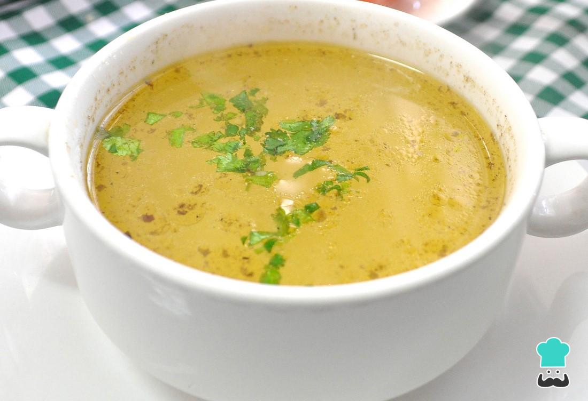

Chile Palano
Chorizo en Barras de Calabaza
Quesadillas de Queso Badilla
Ostiones en su centro

Consomé costecho

Pierna al hombro

Downtown
1488 Veryl Arge St
Suite 108
Prince Anthony, Texas
East Bayside
3433 Hugh Mongus's Avenue
(Dirty Sanchez Corner)
Dicklaikston, Texas
Franklin Building
69 Aquiles Balagrande Avenue
Third Floor
Alexis, Texas